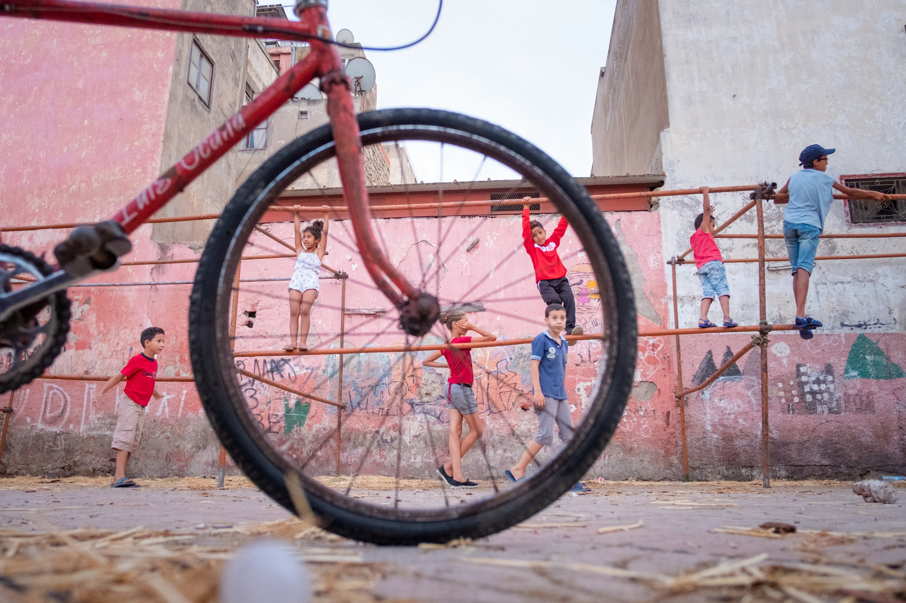
Yassine Alaoui Ismaili
“Wheel of Life, Casablanca” (2017)
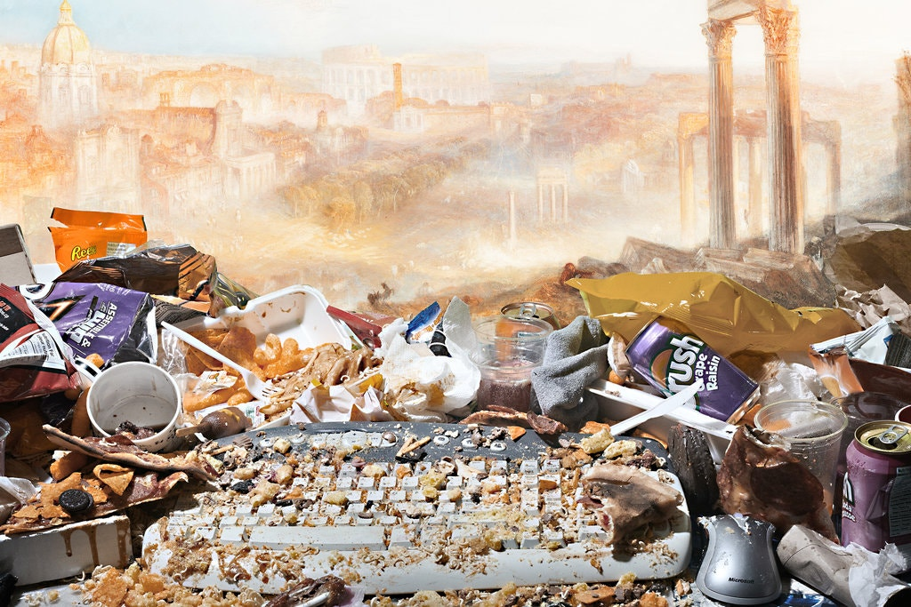
Jon Rafman
"You Are Standing in an Open Field (Modern Rome - Campo Vaccino)"(2015)
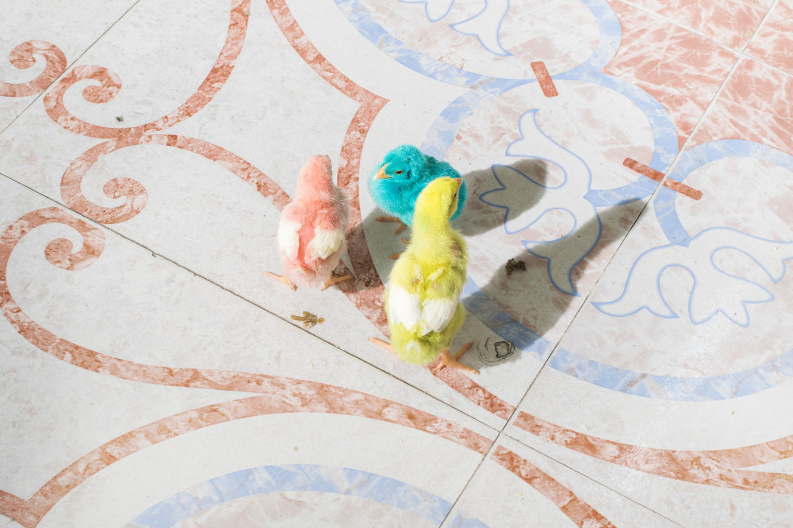
Farah Al Qasimi
“Dyed Pastel Birds (30 AED each)” (2019)
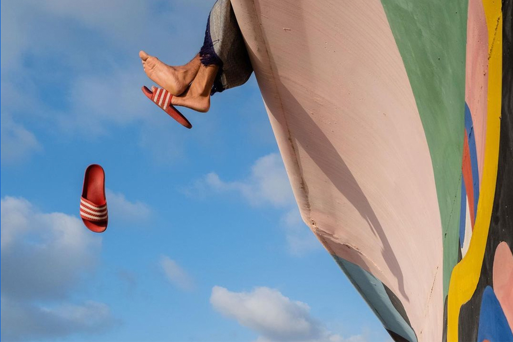
Yassine Alaoui Ismaili
"Casablanca" (2019)
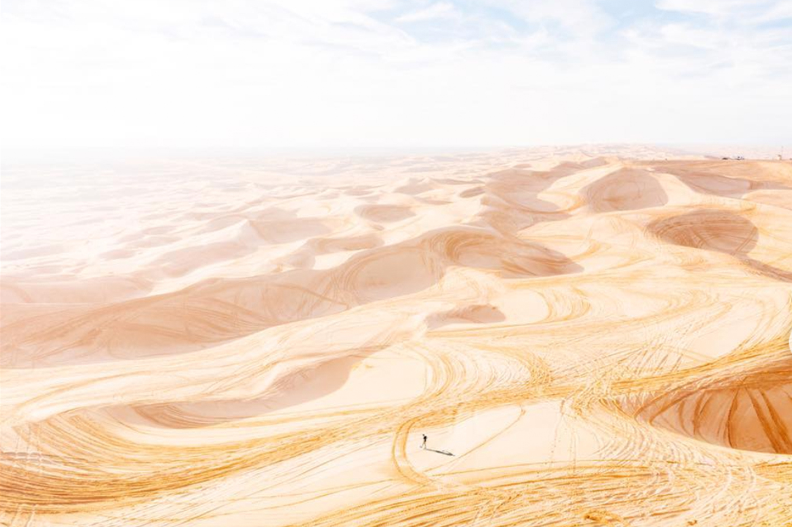
Adam Senatori
"One small step"(2019)
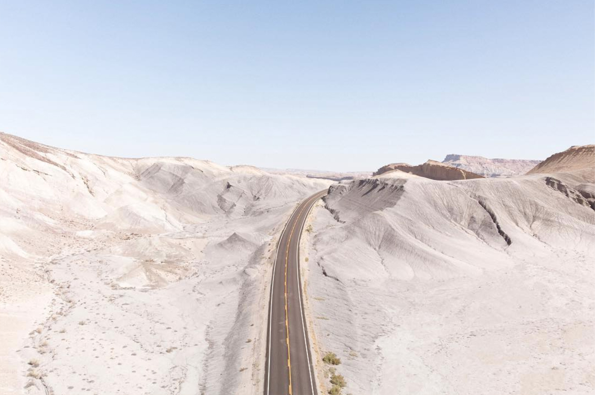
Adam Senatori
"Utah State Route 24" (2018)
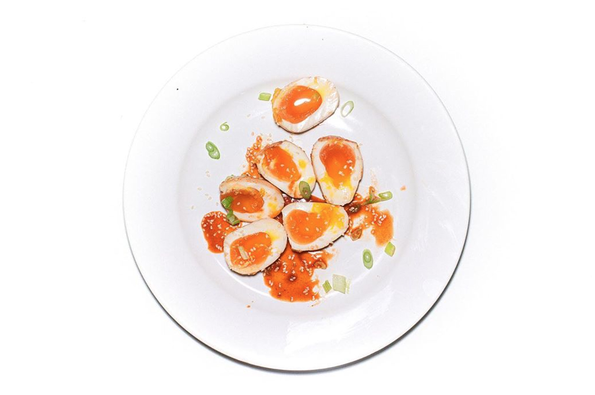
Ash Adams
2020
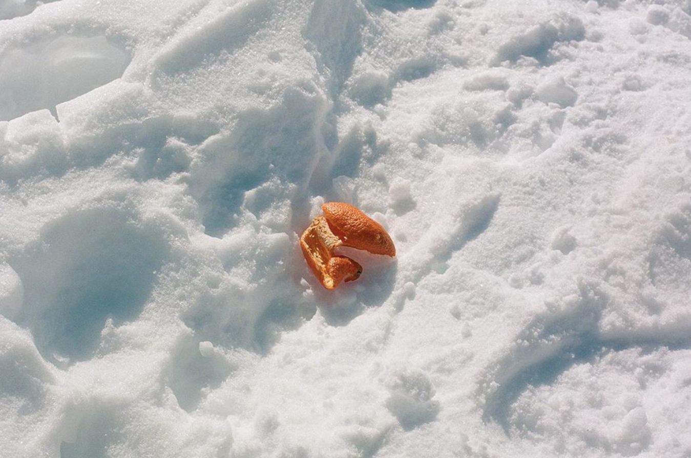
Ash Adams
2020
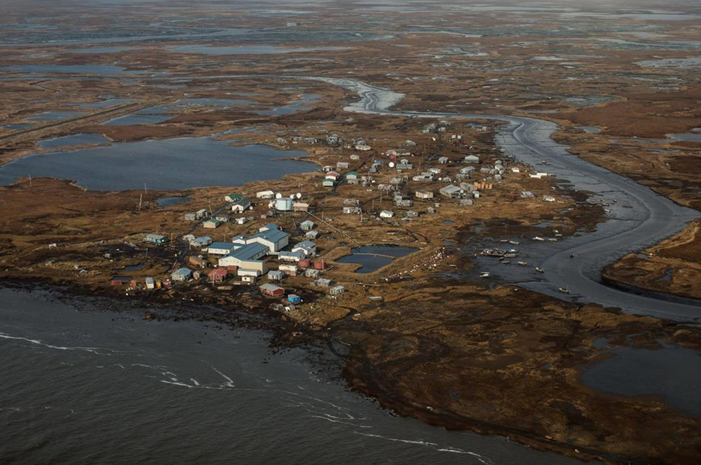
Ash Adams
2020
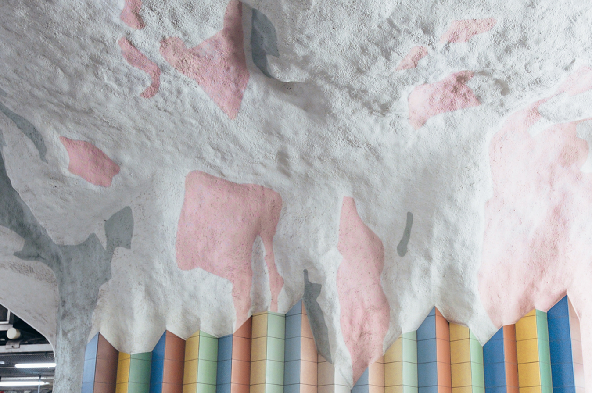
Kiki
2019
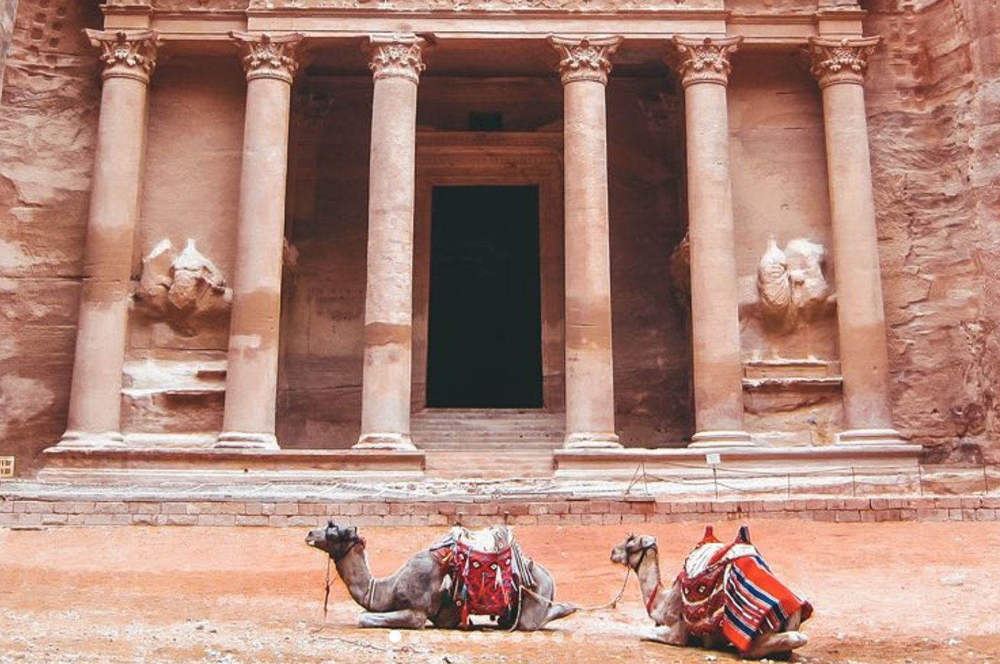
Kiki
2018
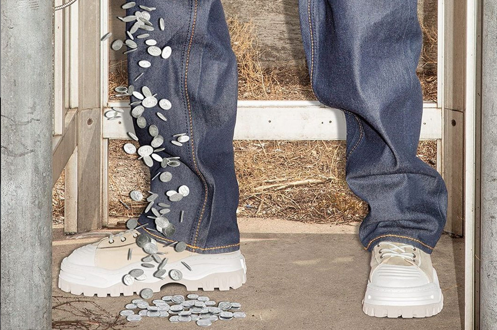
Kyle Berger
2020